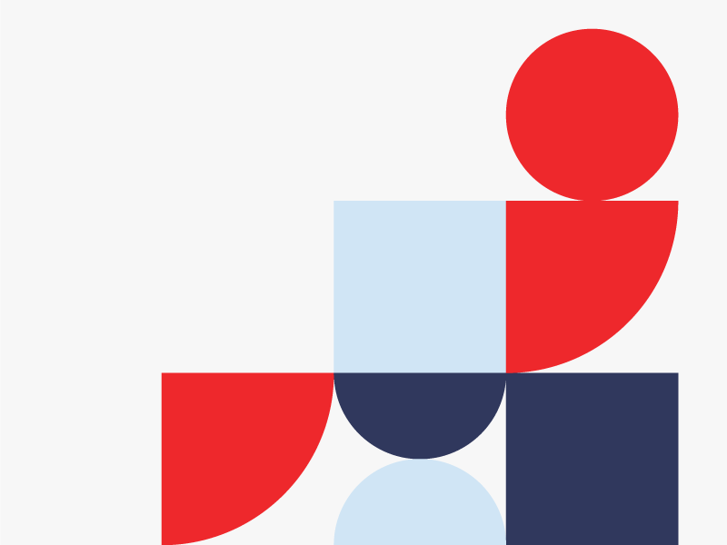
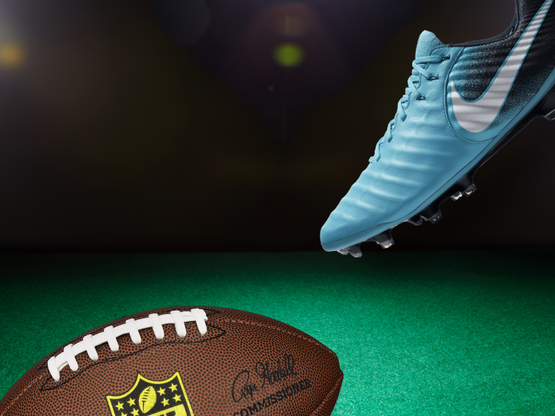
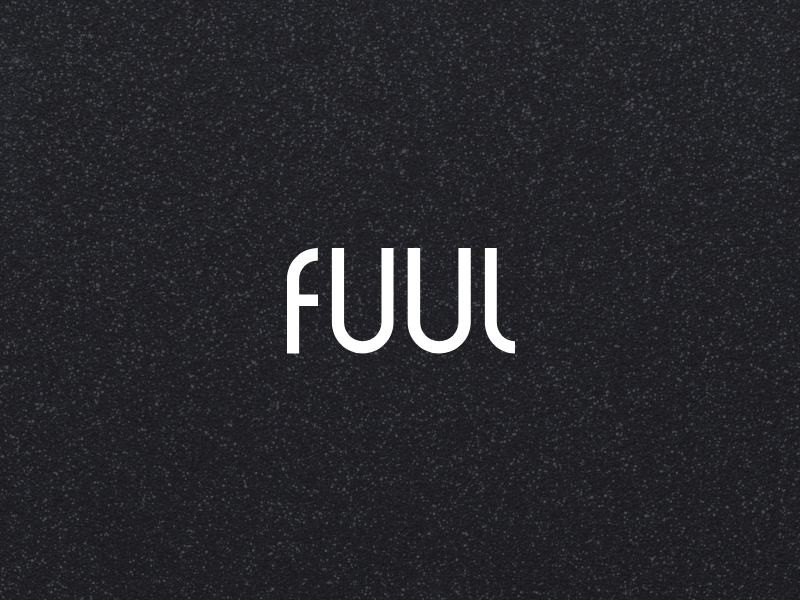
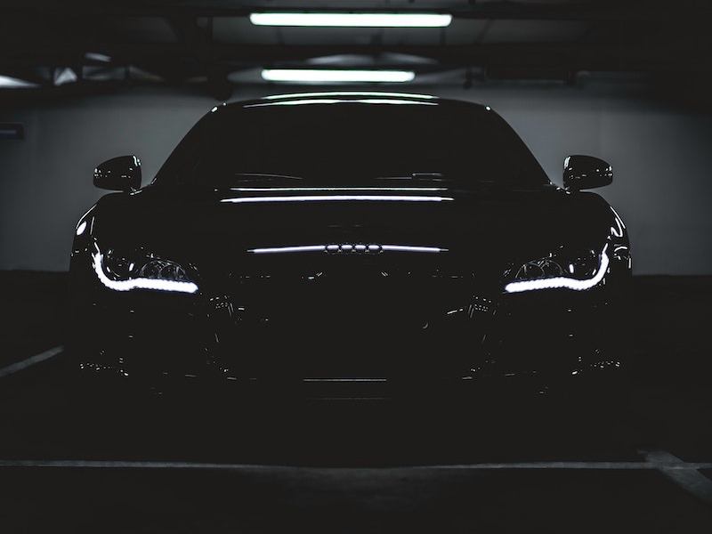

Projects
About
Contact
Zack MacTavish.
Digital Designer.
Zack MacTavish.
Digital Designer.
I'm Zack MacTavish, a Philadelphia-based designer helping businesses build their brand and digital presence, from identity systems to websites to UX/UI for web and mobile.
My Work.

Three Pillars Branding

Vayner Sports Website
Piton Fitness Mobile App

FUUL App + Website

CCA Website
Loud Luxury Tour Website
Better Tomorrow Ventures Branding
Serious Tools Website